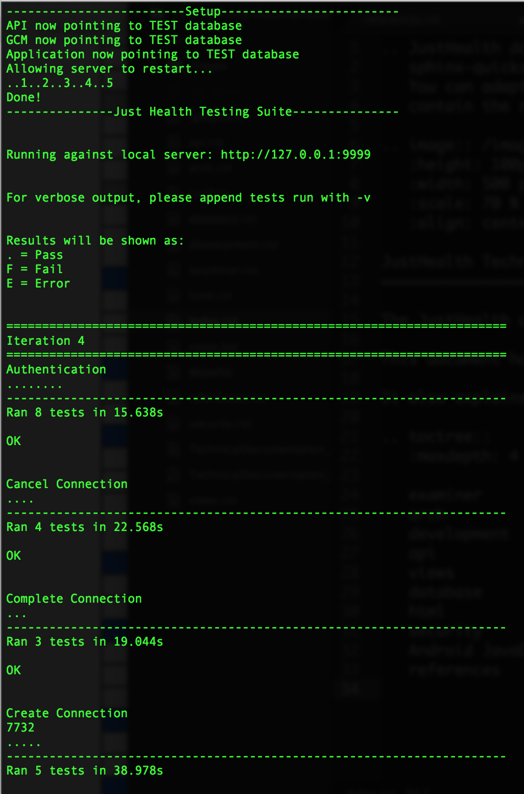

Development¶
The JustHealth application was developed using an iterative approach with a strong focus on being as fast and lightweight as possible.
One of the primary ways we achieved this was through the use of various tools and processes. In some cases we took small parts of methodologies or tools in order to make them work best for us.
General Development Process¶
Below is outlined the “ideal” process that we aimed to follow for every prece of functionality. We didn’t manage to follow this 100% for every little piece of work, but for the most part it worked well.
- Identify a piece of functionality to work on
- Write a card on Trello to document this feature, who is assigned, when it is due and what needs to be done
- Create a git branch from either master, or an existing parent branch for a wider piece of functionality
- Write general test cases for this test. Here we would select the inputs and outputs we would expect from a piece of functionality
- A developer, or pair, would work on this feature, committing work to the git repository
- Once completed a pull request would be created
- All tests would be run and the team would review the request
- On completion of all tests, the pull request would be merged to the parent branch
Our goal with this development process is to ensure that anything on the master branch is deployable at any time. Through the running of tests and review on any pull request, we could attempt to ensure that master was kept clean of any bugs or issues. If an issue was found, it would be logged on the GitHub issues page.
Testing¶
We strived to use Test-Driven Development as best we could throughout the entirety of the project. This involves creating tests before any code is written showing the general expected inputs and outputs. The functionality should then be written so that it passes the test. One of the downsides of this approach is that it relies on how well the test covers all eventualities. This did result in tests being rewritten and rerun throughout the entire development time when needed.
We also had a seperate JustHealthTest database which the application would connect to, so that we were not running tests against our Production environment.
We had numerous types of tests:
- Automated API tests.
- Functional web application tests
- Functional mobile application (Android) tests
Around Iteration 3, we realised that keeping track of all the testing in a word document was causing issues. We tried a number of different options, such as implementing a Continuous Integration tool such as Travis CI or Jenkins. This would cause all of our (automated) tests to be ran whenever a merge to the master branch is made, automatically recording the results of a build and notifying us. However, due to challenges with working on the Kent network, and the added hassle of learning these skills we decided against this.
Instead, Stephen built the JustHealth Testing Portal, a small appliction again written in Python/Flask, which allowed us to store all tests and individual runs/results in a database with a front end interface. This greatly improved the speed and quality of our tests/runs.
At Iteration 3 we added also added Iteration 1 and 2 tests under there respetive Iteration number. However, the dates reflect the testing completed at the end of Iteration 3 as these were tested again on input and to reflect starting using the portal. All our initial SQL database tests were added undter iteration 0 since these were now redundant as we no longer touched the database with SQL, it is now all done programmatically using Python, Psycopg2 and PeeWee.
At Iteration 4 we realised we were not thoroughly testing all the API functions that we had written, therefore as part of our testing for iteration 4 we wrote API tests for all the function we had already written and continued to do this going forward for each iteration. As previously mentioned these are re run every iteration.
Another improvement we have made over the course of each iteration, is making the tests more thorough and ensuring the prerequisits are clearly explained. This has improved throughout the project with running a test driven development approach.
Automated API Tests¶
Introduction
The automated tests made use of Python’s built in unittest package, which allows tests to created combining calls to our application and assert statements in order to set the pass/fail conditions. The setUp() and tearDown() run before and after every test respectively (although are not used in the example below).
import unittest
class testExample(unittest.TestCase):
def setUp(self): pass
def testPass(self):
self.assertEqual('hello', a)
def testFail(self):
a = "world"
self.assertEqual('hello', a)
def tearDown(self): pass
We can run this using:
$ python -m unittest -v testExample
Which will give the following output:
testFail (testExample.testExample) ... FAIL
testPass (testExample.testExample) ... ok
======================================================================
FAIL: testFail (testExample.testExample)
----------------------------------------------------------------------
Traceback (most recent call last):
File "testExample.py", line 9, in testFail
self.assertEqual('hello', a)
AssertionError: 'hello' != 'world'
----------------------------------------------------------------------
Ran 2 tests in 0.000s
FAILED (failures=1)
This gives us a quick summary of which tests passed/failed in each TestCase, and why any failures occured.
In order to write tests effectively we used the following iterative method:
- Write descriptions of tests only
import unittest
testDatabase = imp.load_source('testDatabase', 'Website/justHealthServer/testDatabase.py')
class testCreateNotification(unittest.TestCase):
def testLegitimate(self):
"""Attempt to create a legitimate notification"""
return False
def testInvalidType(self):
"""Attempt to create a notification with a non Foreign Key type"""
return False
def testInvalidUser(self):
"""Attempt to create a notification for a user that doesn't exist"""
return False
Here we have written the 3 tests we are going to write for the CreateNotification functionality. They all return False so that they fail.
- Implement database functionality / setUp(), tearDown()
runTests.sh¶
In order to further make testing easier, Rich developed the .runTests.sh bash script in order to run all recorded tests. It accomplished:
- Switching the local server to run against the test database (in order to minimise the risk of unintentinally modifying production tables/data)
- Running every single automated test and recording all results.
This file can be run from the root of the project, provided a local server is running and connection to the Kent network is available.
$ . runTests.sh
Below is the output from an example test running session, showing tests passing:
{kind=link}
The source of this file is below:
#!/bin/bash
# About
# This should run all tests and give results. It will also automatically alter the local server in order to point to the database, and change back when finshed.
# More detailed output can be added by appending -v to the test in question
# Usage
# Run using '$ . runTests.sh'
# Must be on kent.ac.uk network
# Line 5 in Website/justHealthServer/api.py !!!MUST!!! be the database import
# Results
# . = PASS
# F = Fail
# E = Error
function getImportAPI {
sed '5q;d' Website/justHealthServer/api.py
}
function getImportGCM {
sed '2q;d' Website/justHealthServer/gcm.py
}
importStatementAPI=`getImportAPI`;
importStatementGCM=`getImportGCM`;
echo -e "-------------------------Setup-------------------------"
if [[ $importStatementAPI == "from database import *" ]]; then
sed -i "" -e "5s/.*/from testDatabase import */" Website/justHealthServer/api.py;
echo "API now pointing to TEST database"
if [[ $importStatementGCM == "from database import *" ]]; then
sed -i "" -e "2s/.*/from testDatabase import */" Website/justHealthServer/gcm.py;
echo "GCM now pointing to TEST database"
echo "Application now pointing to TEST database"
echo "Allowing server to restart..."
sleep 1
echo -ne "..1.."\\r
sleep 1
echo -ne "..1..2"\\r
sleep 1
echo -ne "..1..2..3"\\r
sleep 1
echo -ne "..1..2..3..4"\\r
sleep 1
echo -e "..1..2..3..4..5"\\r
echo "Done!"
runTests
elif [[ $importStatement == "from testDatabase import *" ]]; then
echo "Application already pointing to TEST database";
runTests
elif [[ $importStatement == "from testDatabase import *" ]]; then
echo "Application already pointing to TEST database";
runTests
else
echo "Something went wrong. Check DB import statement of Website/justHealthServer/gcm.py";
fi
echo "Reverting application to PRODUCTION database"
sed -i "" -e "5s/.*/from database import */" Website/justHealthServer/api.py;
sed -i "" -e "2s/.*/from database import */" Website/justHealthServer/gcm.py;
elif [[ $importStatement == "from testDatabase import *" ]]; then
echo "Application already pointing to TEST database";
runTests
elif [[ $importStatement == "from testDatabase import *" ]]; then
echo "Application already pointing to TEST database";
runTests
else
echo "Something went wrong. Check DB import statement of Website/justHealthServer/api.py";
fi
echo "Reverting application to PRODUCTION database"
sed -i "" -e "5s/.*/from database import */" Website/justHealthServer/api.py;
sed -i "" -e "2s/.*/from database import */" Website/justHealthServer/gcm.py;
function runTests {
echo -e "---------------Just Health Testing Suite---------------"
echo -e "\n"
echo -e "Running against local server: http://127.0.0.1:9999"
echo -e "\n"
echo -e "For verbose output, please append tests run with -v"
echo -e "\n"
echo -e "Results will be shown as:"
echo -e ". = Pass"
echo -e "F = Fail"
echo -e "E = Error"
echo -e "\n"
echo -e "======================================================================"
echo "Iteration 4"
echo -e "======================================================================"
echo "Authentication"
python -m unittest discover Iteration\ Specific\ Plans/Iteration\ 4/Test\ Cases/ testAuthentication.py
echo -e "\n"
echo "Cancel Connection"
python -m unittest discover Iteration\ Specific\ Plans/Iteration\ 4/Test\ Cases/ testCancelConnection.py
echo -e "\n"
echo "Complete Connection"
python -m unittest discover Iteration\ Specific\ Plans/Iteration\ 4/Test\ Cases/ testCompleteConnection.py
echo -e "\n"
echo "Create Connection"
python -m unittest discover Iteration\ Specific\ Plans/Iteration\ 4/Test\ Cases/ testCreateConnection.py
echo -e "\n"
echo "Deactivate Account"
python -m unittest discover Iteration\ Specific\ Plans/Iteration\ 4/Test\ Cases/ testDeactivateAccount.py
echo -e "\n"
echo "Delete Connection"
python -m unittest discover Iteration\ Specific\ Plans/Iteration\ 4/Test\ Cases/ testDeleteConnection.py
echo -e "\n"
echo "Get Account Info"
python -m unittest discover Iteration\ Specific\ Plans/Iteration\ 4/Test\ Cases/ testGetAccountInfo.py
echo -e "\n"
echo "Get Connections"
python -m unittest discover Iteration\ Specific\ Plans/Iteration\ 4/Test\ Cases/ testGetConnections.py
echo -e "\n"
echo "Registration"
python -m unittest discover Iteration\ Specific\ Plans/Iteration\ 4/Test\ Cases/ testRegistration.py
echo -e "\n"
echo "Search Patient Carer"
python -m unittest discover Iteration\ Specific\ Plans/Iteration\ 4/Test\ Cases/ testSearchPatientCarer.py
echo -e "\n"
echo -e "======================================================================"
echo "Iteration 5"
echo -e "======================================================================"
echo "Add Appointments"
python -m unittest discover Iteration\ Specific\ Plans/Iteration\ 5/Test\ Cases/ testAddAppointments.py
echo -e "\n"
echo "Add Medication"
python -m unittest discover Iteration\ Specific\ Plans/Iteration\ 5/Test\ Cases/ testAddMedication.py
echo -e "\n"
echo "Add Prescription"
python -m unittest discover Iteration\ Specific\ Plans/Iteration\ 5/Test\ Cases/ testAddPrescription.py
echo -e "\n"
echo "Delete Appointment"
python -m unittest discover Iteration\ Specific\ Plans/Iteration\ 5/Test\ Cases/ testDeleteAppointments.py
echo -e "\n"
echo "Delete Medication"
python -m unittest discover Iteration\ Specific\ Plans/Iteration\ 5/Test\ Cases/ testDeleteMedication.py
echo -e "\n"
echo "Delete Prescription"
python -m unittest discover Iteration\ Specific\ Plans/Iteration\ 5/Test\ Cases/ testDeletePrescription.py
echo -e "\n"
echo "Get Appointment"
python -m unittest discover Iteration\ Specific\ Plans/Iteration\ 5/Test\ Cases/ testGetAppointments.py
echo -e "\n"
echo "Get Prescriptions"
python -m unittest discover Iteration\ Specific\ Plans/Iteration\ 5/Test\ Cases/ testGetPrescriptions.py
echo -e "\n"
echo -e "======================================================================"
echo "Iteration 8"
echo -e "======================================================================"
echo "Get Notifications"
python -m unittest discover Iteration\ Specific\ Plans/Iteration\ 8/TestCases/ testGetNotifications.py
echo -e "\n"
echo "Add Reminders"
python -m unittest discover Iteration\ Specific\ Plans/Iteration\ 8/TestCases/ testAddReminders.py
echo -e "\n"
echo "Create Notification"
python -m unittest discover Iteration\ Specific\ Plans/Iteration\ 8/TestCases/ testCreateNotification.py
echo -e "\n"
echo "Create Prescription Instances"
python -m unittest discover Iteration\ Specific\ Plans/Iteration\ 8/TestCases/ testCreatePrescriptionInstances.py
echo -e "\n"
echo "Delete Reminders"
python -m unittest discover Iteration\ Specific\ Plans/Iteration\ 8/TestCases/ testDeleteReminders.py
echo -e "\n"
echo "Dismiss Notifications"
python -m unittest discover Iteration\ Specific\ Plans/Iteration\ 8/TestCases/ testDimissNotification.py
echo -e "\n"
echo "Get appointments due in 30 minutes"
python -m unittest discover Iteration\ Specific\ Plans/Iteration\ 8/TestCases/ testGetAppointmentsDueIn30.py
echo -e "\n"
echo "Get appointments due now"
python -m unittest discover Iteration\ Specific\ Plans/Iteration\ 8/TestCases/ testGetAppointmentsDueNow.py
echo -e "\n"
echo "Get minutes difference"
python -m unittest discover Iteration\ Specific\ Plans/Iteration\ 8/TestCases/ testGetMinutesDifference.py
echo -e "\n"
echo "Get Missed Prescriptions"
python -m unittest discover Iteration\ Specific\ Plans/Iteration\ 8/TestCases/ testGetMissedPrescriptions.py
echo -e "\n"
echo "Get Prescriptions Due Today"
python -m unittest discover Iteration\ Specific\ Plans/Iteration\ 8/TestCases/ testGetPrescriptionDueToday.py
echo -e "\n"
echo "Get Reminders"
python -m unittest discover Iteration\ Specific\ Plans/Iteration\ 8/TestCases/ testGetReminders.py
echo -e "\n"
echo -e "======================================================================"
echo "Iteration 9"
echo -e "======================================================================"
echo "Add Correspondence"
python -m unittest discover Iteration\ Specific\ Plans/Iteration\ 9/Test\ Cases/ testAddCorrespondence.py
echo -e "\n"
echo "Check Stock Level"
python -m unittest discover Iteration\ Specific\ Plans/Iteration\ 9/Test\ Cases/ testCheckStockLevel.py
echo -e "\n"
echo "Delete Note"
python -m unittest discover Iteration\ Specific\ Plans/Iteration\ 9/Test\ Cases/ testDeleteNote.py
echo -e "\n"
echo "Get Correspondence"
python -m unittest discover Iteration\ Specific\ Plans/Iteration\ 9/Test\ Cases/ testGetCorrespondence.py
echo -e "\n"
echo "Get Patient Notes"
python -m unittest discover Iteration\ Specific\ Plans/Iteration\ 9/Test\ Cases/ testGetPatientNotes.py
echo -e "\n"
echo "Get Prescription Count"
python -m unittest discover Iteration\ Specific\ Plans/Iteration\ 9/Test\ Cases/ testGetPrescriptionCount.py
echo -e "\n"
echo "Take Prescription"
python -m unittest discover Iteration\ Specific\ Plans/Iteration\ 9/Test\ Cases/ testTakePrescription.py
echo -e "\n"
}